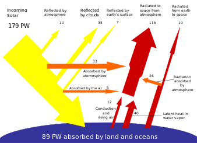

Welcome to our Solar Energy Hub
Solar energy

solar energy, radiation from the Sun capable of producing heat, causing chemical reactions, or generating electricity. The total amount of solar energy incident on Earth is vastly in excess of the world’s current and anticipated energy requirements. If suitably harnessed, this highly diffused source has the potential to satisfy all future energy needs. In the 21st century solar energy is expected to become increasingly attractive as a renewable energy source because of its inexhaustible supply and its nonpolluting character, in stark contrast to the finite fossil fuels coal, petroleum, and natural gas.

Thermal Energy
Among the most common devices used to capture solar energy and convert it to thermal energy are flat-plate collectors, which are used for solar heating applications. Because the intensity of solar radiation at Earth’s surface is so low, these collectors must be large in area. Even in sunny parts of the world’s temperate regions, for instance, a collector must have a surface area of about 40 square metres (430 square feet) to gather enough energy to serve the energy needs of one person.

Electricity generation
Solar radiation may be converted directly into electricity by solar cells (photovoltaic cells). In such cells, a small electric voltage is generated when light strikes the junction between a metal and a semiconductor (such as silicon) or the junction between two different semiconductors. (See photovoltaic effect.) The power generated by a single photovoltaic cell is typically only about two watts. By connecting large numbers of individual cells together, however, as in solar-panel arrays, hundreds or even thousands of kilowatts of electric power can be generated in a solar electric plant or in a large household array. The energy efficiency of most present-day photovoltaic cells is only about 15 to 20 percent, and, since the intensity of solar radiation is low to begin with, large and costly assemblies of such cells are required to produce even moderate amounts of power.

Potential
The Earth receives 174 petawatts (PW) of incoming solar radiation (insolation) at the upper atmosphere.[4] Approximately 30% is reflected back to space while the rest, 122 PW, is absorbed by clouds, oceans and land masses. The spectrum of solar light at the Earth's surface is mostly spread across the visible and near-infrared ranges with a small part in the near-ultraviolet.[5] Most of the world's population live in areas with insolation levels of 150–300 watts/m2, or 3.5–7.0 kWh/m2 per day.[6]
About Us
Welcome to Solar Energy Hub, where our passion drives our commitment to a sustainable and eco-friendly future. Our mission is to promote the widespread adoption of solar energy and harness its incredible benefits for a cleaner and greener planet.
At Solar Energy Hub, we believe in the power of clean and sustainable energy to transform the way we power our lives. Our team is dedicated to providing innovative solutions and expert guidance to make solar energy accessible to everyone.
What sets us apart is our unwavering commitment to environmental responsibility. By offering a range of services, from solar panel installation and maintenance to personalized system design and financing options, we strive to make the transition to solar energy seamless and affordable for individuals and businesses alike.
Join us in the journey towards a brighter and more sustainable future. Discover the potential of solar energy with Solar Energy Hub - your trusted partner in clean energy solutions.
Our Services
Solar Panel Installation
This involves assessing a property to determine its solar potential, designing an appropriate system, and installing the panels.
Solar Panel Maintenance
Regular inspection and maintenance of solar panels to ensure they are operating at peak efficiency.
Solar Energy Consultation
Providing advice and guidance on the best solar energy solutions for a specific property or project.
Solar Energy System Design
Creating customized solar energy systems tailored to the specific needs and energy usage of a property.
Solar Energy Financing
Helping customers navigate the financial aspects of investing in solar energy, including financing options, incentives, and tax credits.
Solar Energy Monitoring
Implementing systems to monitor the performance and output of solar energy systems, allowing for proactive maintenance and optimization.